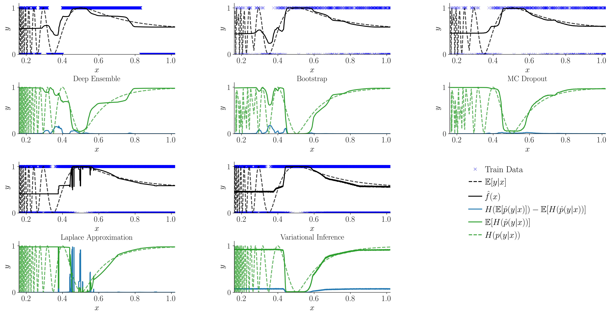

Position: Epistemic uncertainty estimation methods are fundamentally incomplete
Additional figures referenced in the author rebuttal
Figure 1

Figure 1.
$\text{Uncertainty estimation for a binary classification problem, where }p(y|x)=0.5\times(\sin(1/(5x^3))+1).\text{ There are two panels for each model type. The panel on
top shows the training data as the blue marks, the true probability of $y$ given $x$ and the models' probabilities predictions. The panel on the bottom
shows the aleatoric and epistemic uncertainty estimates, and the true aleatoric uncertainty (entropy of the true conditional probability). We see that when the model bias is high, aleatoric uncertainty is
inflated and epistemic uncertainty is underestimated.}$